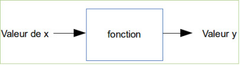
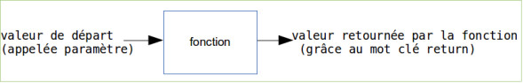

Les fonctions permettent de décomposer un programme complexe en une série de sous-programmes plus simples. De plus, les fonctions sont réutilisables : si nous disposons d'une fonction capable de calculer une racine carrée, par exemple, nous pouvons l'utiliser un peu partout dans notre programme sans avoir à la réécrire à chaque fois.
La notion de fonction en informatique est comparable à la notion de fonction en mathématiques.
Si nous avons y = 3x+2, pour une valeur donnée de x, nous aurons une valeur de y.
Exemple : x=4 donc y= 14 (y = 3.4+2=14, attention ici le point correspond au signe "multiplié").
La fonction en informatique est basée sur la même idée :
Voici la syntaxe employée en JavaScript (quelque soit le langage, le principe est le même), la définition d'une fonction est la suivante :
function nomDeLaFonction (paramètre) {
instructions qui composent la fonction
return y
}
La fonction retournera la valeur contenue dans la variable y.
Codons notre exemple (y=3x+2) en créant une fonction "fct" :
function fct (x) {
y=3*x+2;
return y;
}
Pour "utiliser" (exécuter) la fonction "fct", il suffit d'écrire :
fct (4)
dans ce cas précis, notre fonction renverra le nombre 14
Il faut savoir qu'au moment de l'exécution de votre programme le code "fct(4)" sera systématiquement remplacé par la valeur retournée par la fonction (toujours dans notre exemple le "fct(4)" sera remplacé par le nombre 14).
Soit le programme suivant :
function maFonction (x) {
y=3*x+2 ;
return y;
}
document.write('le résultat est : ');
document.write(maFonction(5));
Quel est le résultat attendu après l’exécution de ce programme ? Vérifiez votre réponse à l'aide de JSFIDDLE.
Notez qu'il est possible d'écrire une fonction comme suit (les 2 écritures sont, en première approche, équivalentes) :
maFonction = function (x) {
y=3*x+2 ;
return y;
}
Il est possible de faire passer plusieurs paramètres à une fonction.
Soit le programme suivant :
uneAutreFonction = function (x,b) {
y=3*x+b ;
return y;
}
document.write('le résultat est : ');
document.write(uneAutreFonction(5,3));
Quel est le résultat attendu après l’exécution de ce programme ? Vérifiez votre réponse à l'aide de JSFIDDLE.
Les paramètres peuvent être des chaînes de caractères (ainsi que la valeur retournée).
Soit le programme suivant :
ditBonjour= function (nom,age) {
var phrase='Bonjour '+nom+' ,vous avez '+age+' ans.';
return phrase;
}
document.write(ditBonjour('toto',14));
document.write('<br/>');
document.write(ditBonjour('titi',17));
Attention : remarquez bien les guillemets autour des paramètres toto et titi (chaines de caractères).
Quel est le résultat attendu après l’exécution de ce programme ? Vérifiez votre réponse à l'aide de JSFIDDLE.
Il faut aussi savoir que la fonction ne retourne pas forcément de valeur (le mot clé return n'est pas obligatoire). Mais si une fonction ne retourne pas de valeur, que fait-elle ? Elle peut faire plein de choses, par exemple une fonction peut tout simplement afficher un texte.
Soit le programme suivant :
function ditBonjour (nom,age) {
document.write ('Bonjour ');
document.write (nom);
document.write (' ,vous avez ');
document.write (age);
document.write (' ans.');
document.write ('<br/>');
}
ditBonjour('Claude',47);
ditBonjour('Ernest',72);
Quel est le résultat attendu après l’exécution de ce programme ? Vérifiez votre réponse à l'aide de JSFIDDLE.
Une dernière chose, les paramètres ne sont pas obligatoires, nous pouvons avoir : function maFon ( ){...} ou maFon=function(){...}.